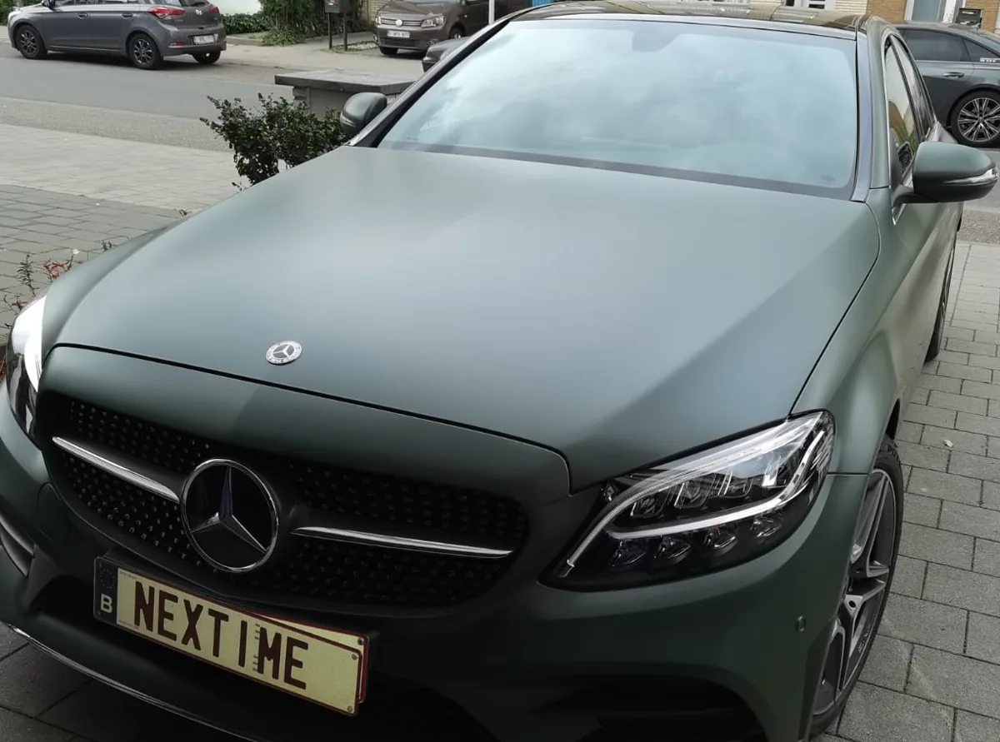
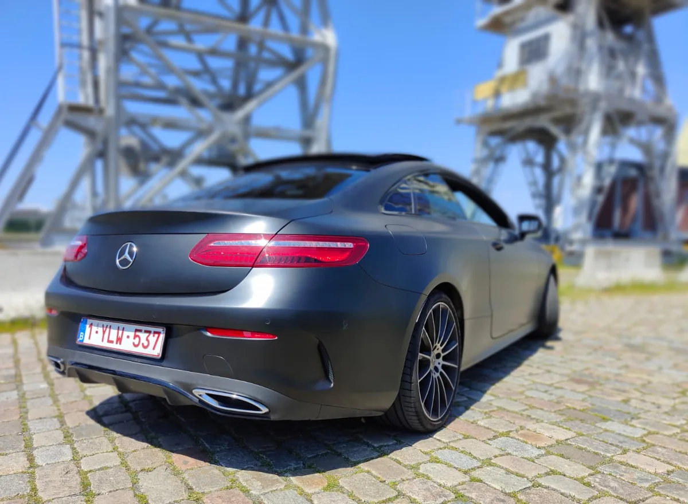
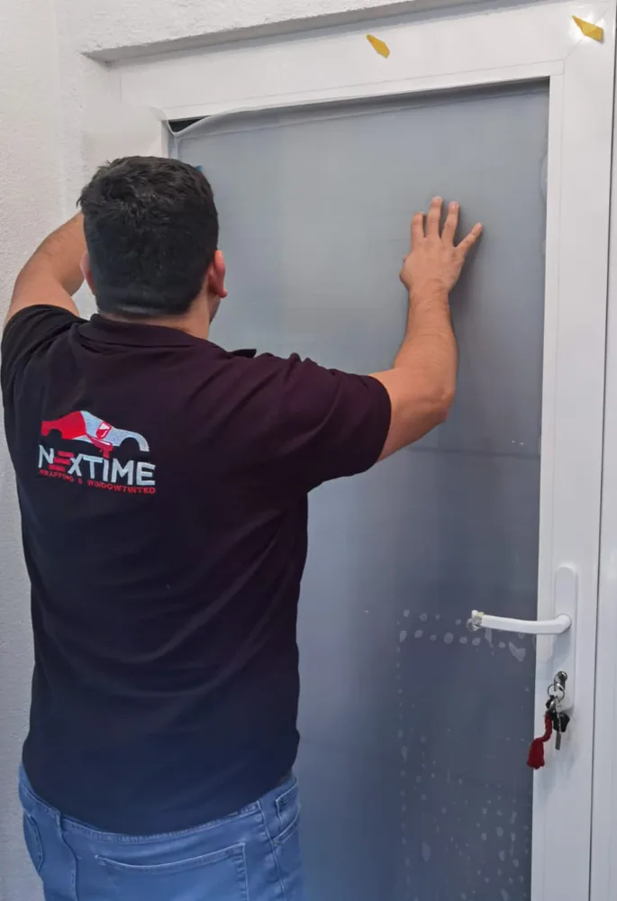
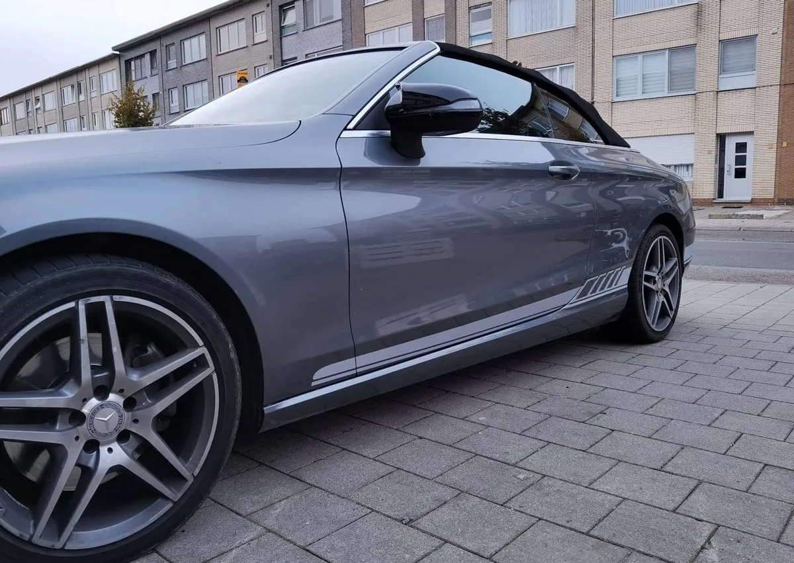

vanaf€ 1.450
Full wrap
Onze specialiteit. Je hele wagen in een nieuwe kleur of met een design dat we samen uittekenen. Van ontwerp tot uitvoering, wij zorgen ervoor.
Kleur, mat, satijn of kleurverloop
Full wraps, getinte ramen, steenslagfolie en een eigen ontwerp dat je eerst digitaal ziet. We werken enkel met folies van hoge kwaliteit, en leveren alleen af waar we zelf trots op zijn.
Een speciale kleur, een mat zwarte look of gewoon getinte ramen voor wat meer privacy. Stuur een foto van je wagen door, dan krijg je snel een prijs.
Onze specialiteit. Je hele wagen in een nieuwe kleur of met een design dat we samen uittekenen. Van ontwerp tot uitvoering, wij zorgen ervoor.
Kleur, mat, satijn of kleurverloopMeer privacy en minder zon in je wagen. Netjes afgewerkt, tot aan de randjes.
Ook tint met beletteringSteenslagfolie die je lak beschermt. Ook in kleur, en die gaat er later weer vlot af zonder lijmresten.
Hele wagen of enkel de kwetsbare delenJe logo en reclame mooi verwerkt in de wrap, van bestelwagen tot vrachtwagen.
Belettering en bedrijfslogoChroom weg, hoogglans zwart, carbonlook of geborsteld staal in de plaats. Ook spiegels, interieur en zelfs je smartphone.
Accent wrappingVelgenherstel, remklauwen verven, een sterrenhemel of nieuwe gordels. Voor wie net dat tikje meer wil.
Ook coatings en uitdeukenNiet tevreden van je keuken? Wrappen is veel goedkoper dan vervangen. We doen ook kasten, deuren en ramen voor meer privacy.
Vraag het onsEen greep uit wat de voorbije tijd door ons atelier reed. Elke week nieuw werk op Instagram.





Zit je met een idee in je hoofd? We tekenen het uit op jouw wagen, zodat je vooraf ziet of het past. Pas als het goed zit, gaat de folie erop.


Stuur een foto van je wagen en vertel wat je in gedachten hebt.
We zetten het ontwerp op jouw wagen, en schaven bij tot het klopt.
In ons atelier, met hoogwaardige folies en oog voor elk randje.


Wrappen is mijn passie. Op dat vlak ga ik geen enkele uitdaging uit de weg.
Murat leerde het vak bij een heel bekend automerk, waar hij de techniek en theorie van het spuiten onder de knie kreeg. Die ervaring nam hij mee naar het wrappen. Eerst zijn eigen auto, dan die van vrienden, en daarna kwamen er steeds meer mensen.
Vandaag werkt hij vanuit zijn atelier in Deurne, vlak aan het Sportpaleis. Auto's, keukens, vrachtwagens en zelfs boten: kom gerust eens langs.
Al enkele jaren vaste klant bij Nexttime wrapping en ondertussen al tientallen wagens laten tinten of wrappen. Steeds dezelfde professionele topservice aan de scherpste prijzen. Afwerking om U tegen te zeggen. Zeker een aanrader!
Wat een topservice!!! Op zaterdag avond contact opgenomen en zondag morgend kon ik al terecht om mijn ramen te blinderen. Super vriendelijke man, werkt snel en goed en is qua prijs goed!! Aanrader
Zeer netjes afgewerkte wrapping van mijn wagen. Reclame mooi verwerkt in de wrapping. Zeer goede communicatie en werkt naar de wensen van de klant. Ten zeerste aan te raden!!
Stuur een foto van je wagen en wat je wil via WhatsApp. Murat laat je snel weten wat kan en wat het kost.

Ik maakte deze demo voor jullie om te tonen wat er kan. Na een kort gesprek maak ik er iets veel persoonlijkers van, helemaal naar jullie wens.
Vrijblijvend. Ik kom langs of we bellen.
Op maat, op jullie eigen domein.
Geen voorschot. Jullie betalen pas als alles klaar is.
Hosting, domeinnaam en kleine wijzigingen, zoals nieuwe openingsuren.
Omdat een voorbeeld meer zegt dan een mail. Zo zien jullie meteen wat er kan, en het kost jullie niets.
Nee. Het gesprek is vrijblijvend. Vinden jullie het niks, dan is het daarmee gedaan.
Na ons gesprek staat jullie site binnen 10 tot 14 dagen online.
Zeker. Jullie domeinnaam kan gewoon blijven, de nieuwe site komt in de plaats van de oude.
Nee, dat doe ik op basis van ons gesprek. Eigen foto's zijn mooi meegenomen, maar niet nodig om te starten.